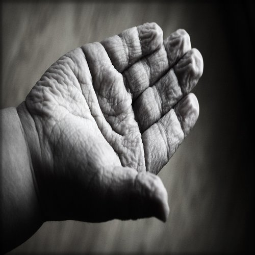

Historia
- El Comedor Los Hijos de Dios es un proyecto que le da de comer a aquellas personas que les hace falta comida en el cantón de Mora.
- Iniciamos ubicados frente al Servicentro Delta en Ciudad Colón. Ahora nos encontramos, 50 metros antes del Colegio Diurno.
- El objetivo principal del proyecto es ayudar a todo aquel que este hambriento tanto de comida como de Dios.
- Diariamente se sirven entre 70 a 100 platos por día, a adultos mayores, habitantes de las calles, enfermos terminales, familias con niños e indígenas. Se les sirve 2 platos por día. También recibimos a pacientes que envía el Ebais, asisten a su cita y pasan todo el día en este lugar, muchas de estas personas tienen a lo mucho para el pase de regreso a sus hogares.
- Comedor los Hijos de Dios subsiste con la colaboración de los y las vecinos/as del cantón. Estamos buscando crecer para poder ayudar a más gente y llegar más lejos. Toda ayuda es bienvenida ya sea con trabajo, en especie (comida, gas, utensilios, etc.) o en efectivo para cubrir los gastos de operación.

Misión
Darle esperanza, oportunidad y calidad de vida a los más necesitados, que sepan que si hay personas que nos preocupamos y trabajamos por el bienestar de ellos.
Visón
La unión de los más favorecidos trabajando en pro de los más necesitados, para lograr minimizar y erradicar el hambre en donde quiera que estemos.

Valores
- Espíritu de servicio
- Compromiso con la comunidad
- Honestidad
- Integridad
- Empeño en trabajar por los necesitados